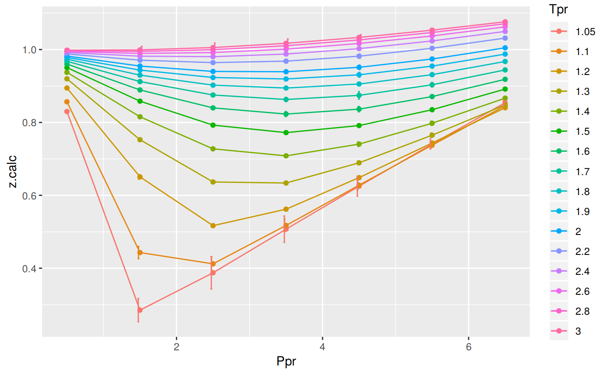
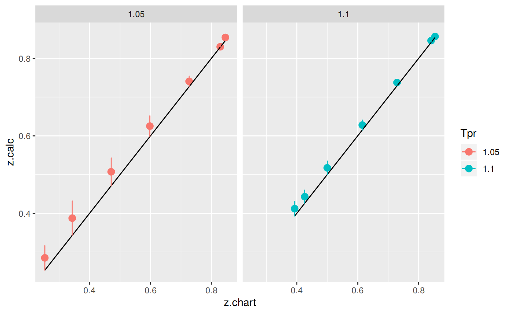

DPR is differentThe Dranchuk-Purvis-Robinson correlation is different than the other correlations in the sense that the authors were looking at redrawing three of the isotherms of the original work by Standing-Katz: the curves at Tpr=1.05, Tpr=1.1 and Tpr=1.15. The authors were expecting that later the corrections to be adopted with experimental data matching those two new curves. We haven’t found a paper confirming that yet. (See Dranchuk et al. 1973).
Other than that, the DPR correlation behaves pretty well but not much better than the DAK correlation.
z at selected Ppr and Tpr
Use the corelation to calculate z. From the Standing-Katz chart we obtain z at a digitized point at the given Tpr and Ppr.
# get a z value
library(zFactor)
ppr <- 1.5
tpr <- 2.0
z.calc <- z.DranchukPurvisRobinson(pres.pr = ppr, temp.pr = tpr)
# get a z value from the SK chart at the same Ppr and Tpr
z.chart <- getStandingKatzMatrix(tpr_vector = tpr,
pprRange = "lp")[1, as.character(ppr)]
# calculate the APE
ape <- abs((z.calc - z.chart) / z.chart) * 100
df <- as.data.frame(list(Ppr = ppr, z.calc =z.calc, z.chart = z.chart, ape=ape))
rownames(df) <- tpr
df
# HY = 0.9580002; # DAK = 0.9551087 Ppr z.calc z.chart ape
2 1.5 0.9546382 0.956 0.1424501z at selected Ppr and Tpr=1.1
From the Standing-Katz chart we obtain z at a digitized point:
library(zFactor)
ppr <- 1.5
tpr <- 1.1
z.calc <- z.DranchukPurvisRobinson(pres.pr = ppr, temp.pr = tpr)
# From the Standing-Katz chart we obtain a digitized point:
z.chart <- getStandingKatzMatrix(tpr_vector = tpr,
pprRange = "lp")[1, as.character(ppr)]
# calculate the APE
ape <- abs((z.calc - z.chart) / z.chart) * 100
df <- as.data.frame(list(Ppr = ppr, z.calc =z.calc, z.chart = z.chart, ape=ape))
rownames(df) <- tpr
df Ppr z.calc z.chart ape
1.1 1.5 0.4429389 0.426 3.976272At lower
Tprwe can see that there is some difference between the values of z from the DPR calculation and the value read from the Standing-Katz chart.
z for combinations of Ppr and Tpr
In this example we provide vectors instead of a single point. With the same ppr and tpr vectors that we use for the correlation, we do the same for the Standing-Katz chart. We want to compare both and find the absolute percentage error.
# test HY with 1st-derivative using the values from paper
ppr <- c(0.5, 1.5, 2.5, 3.5, 4.5, 5.5, 6.5)
tpr <- c(1.05, 1.1, 1.7, 2)
# calculate using the correlation
z.calc <- z.DranchukPurvisRobinson(ppr, tpr)
# With the same ppr and tpr vector, we do the same for the Standing-Katz chart
z.chart <- getStandingKatzMatrix(ppr_vector = ppr, tpr_vector = tpr)
ape <- abs((z.calc - z.chart) / z.chart) * 100
# calculate the APE
cat("z.correlation \n"); print(z.calc)
cat("\n z.chart \n"); print(z.chart)
cat("\n APE \n"); print(ape)z.correlation
0.5 1.5 2.5 3.5 4.5 5.5 6.5
1.05 0.8299757 0.2849670 0.3874732 0.5071451 0.6251306 0.7407256 0.8540945
1.1 0.8566368 0.4429389 0.4120547 0.5173680 0.6278497 0.7376397 0.8458855
1.7 0.9677844 0.9121791 0.8752677 0.8630002 0.8743271 0.9033216 0.9440582
2 0.9822021 0.9546382 0.9399310 0.9391490 0.9512966 0.9740256 1.0047347
z.chart
0.5 1.5 2.5 3.5 4.5 5.5 6.5
1.05 0.829 0.253 0.343 0.471 0.598 0.727 0.846
1.10 0.854 0.426 0.393 0.500 0.615 0.729 0.841
1.70 0.968 0.914 0.876 0.857 0.864 0.897 0.942
2.00 0.982 0.956 0.941 0.937 0.945 0.969 1.003
APE
0.5 1.5 2.5 3.5 4.5 5.5
1.05 0.11769033 12.6351920 12.96594664 7.6741203 4.5368917 1.8879838
1.1 0.30875526 3.9762721 4.84851814 3.4735929 2.0893900 1.1851375
1.7 0.02227128 0.1992260 0.08360117 0.7001396 1.1952693 0.7047482
2 0.02057809 0.1424501 0.11359921 0.2293483 0.6663029 0.5186423
6.5
1.05 0.9567950
1.1 0.5809181
1.7 0.2184874
2 0.1729508You can see errors of 12.64% and 12.97% in the isotherm
Tpr=1.05. Other errors, greater than one, can also be found at the isothermTpr=1.1: 4.85%. Then, the rest of theTprcurves are fine.
isotherms
Applying the function summary over the transpose of the matrix:
sum_t_ape <- summary(t(ape))
sum_t_ape 1.05 1.1 1.7 2
Min. : 0.1177 Min. :0.3088 Min. :0.02227 Min. :0.02058
1st Qu.: 1.4224 1st Qu.:0.8830 1st Qu.:0.14141 1st Qu.:0.12802
Median : 4.5369 Median :2.0894 Median :0.21849 Median :0.17295
Mean : 5.8249 Mean :2.3518 Mean :0.44625 Mean :0.26627
3rd Qu.:10.1547 3rd Qu.:3.7249 3rd Qu.:0.70244 3rd Qu.:0.37400
Max. :12.9659 Max. :4.8485 Max. :1.19527 Max. :0.66630 We see that the errors at
Tpr=1.05inzare considerable with a Min. : 0.1177 % and Max. :12.9659 %, and a Min. :0.3088 % and Max. :4.8485 % forTpr=1.10. We will explore later a comparative tile chart where we confirm these early calculations.
Tpr
library(zFactor)
# enter vectors for Tpr and Ppr
tpr2 <- c(1.2, 1.3, 1.5, 2.0, 3.0)
ppr2 <- c(0.5, 1.5, 2.5, 3.5, 4.5, 5.5)
# get z values from the SK chart
z.chart <- getStandingKatzMatrix(ppr_vector = ppr2, tpr_vector = tpr2, pprRange = "lp")
# We do the same with the DPR correlation:
# calculate z values at lower values of Tpr
z.calc <- z.DranchukPurvisRobinson(pres.pr = ppr2, temp.pr = tpr2)
ape <- abs((z.calc - z.chart) / z.chart) * 100
# calculate the APE
cat("z.correlation \n"); print(z.calc)
cat("\n z.chart \n"); print(z.chart)
cat("\n APE \n"); print(ape)z.correlation
0.5 1.5 2.5 3.5 4.5 5.5
1.2 0.8944622 0.6506542 0.5167723 0.5620069 0.6486093 0.7435619
1.3 0.9197157 0.7525940 0.6366665 0.6337883 0.6891997 0.7650171
1.5 0.9504834 0.8583491 0.7926325 0.7720713 0.7914322 0.8348883
2 0.9822021 0.9546382 0.9399310 0.9391490 0.9512966 0.9740256
3 0.9982332 0.9990423 1.0054940 1.0171291 1.0332788 1.0531986
z.chart
0.5 1.5 2.5 3.5 4.5 5.5
1.20 0.893 0.657 0.519 0.565 0.650 0.741
1.30 0.916 0.756 0.638 0.633 0.684 0.759
1.50 0.948 0.859 0.794 0.770 0.790 0.836
2.00 0.982 0.956 0.941 0.937 0.945 0.969
3.00 1.002 1.009 1.018 1.029 1.041 1.056
APE
0.5 1.5 2.5 3.5 4.5 5.5
1.2 0.16373952 0.96587736 0.4292331 0.5297522 0.2139491 0.3457414
1.3 0.40564053 0.45053093 0.2090095 0.1245350 0.7601879 0.7927605
1.5 0.26196479 0.07577742 0.1722264 0.2689942 0.1812966 0.1329789
2 0.02057809 0.14245011 0.1135992 0.2293483 0.6663029 0.5186423
3 0.37592424 0.98689063 1.2284915 1.1536378 0.7417116 0.2652884We observe that at
Tprabove or equal to 1.2 theDAKcorrelation behaves very well.
isotherms
Applying the function summary over the transpose of the matrix to observe the error of the correlation at each isotherm.
sum_t_ape <- summary(t(ape))
sum_t_ape
# Hall-Yarborough
# 1.2 1.3 1.5 2
# Min. :0.05224 Min. :0.1105 Min. :0.1021 Min. :0.0809
# 1st Qu.:0.09039 1st Qu.:0.2080 1st Qu.:0.1623 1st Qu.:0.1814
# Median :0.28057 Median :0.3181 Median :0.1892 Median :0.1975
# Mean :0.30122 Mean :0.3899 Mean :0.2597 Mean :0.2284
# 3rd Qu.:0.51710 3rd Qu.:0.5355 3rd Qu.:0.3533 3rd Qu.:0.2627
# Max. :0.57098 Max. :0.8131 Max. :0.5162 Max. :0.4338
# 3
# Min. :0.09128
# 1st Qu.:0.17466
# Median :0.35252
# Mean :0.34820
# 3rd Qu.:0.52184
# Max. :0.59923 1.2 1.3 1.5 2
Min. :0.1637 Min. :0.1245 Min. :0.07578 Min. :0.02058
1st Qu.:0.2469 1st Qu.:0.2582 1st Qu.:0.14279 1st Qu.:0.12081
Median :0.3875 Median :0.4281 Median :0.17676 Median :0.18590
Mean :0.4414 Mean :0.4571 Mean :0.18221 Mean :0.28182
3rd Qu.:0.5046 3rd Qu.:0.6828 3rd Qu.:0.24180 3rd Qu.:0.44632
Max. :0.9659 Max. :0.7928 Max. :0.26899 Max. :0.66630
3
Min. :0.2653
1st Qu.:0.4674
Median :0.8643
Mean :0.7920
3rd Qu.:1.1120
Max. :1.2285 We see that the errors in z with DPR are far lower than Hall-Yarborough with a Min. :0.1637 % and Max. :0.9659 % for Tpr=1.2, and a Min. :0.1245 % and Max. :0.7928 % for Tpr=1.3.
SK vs DPR correlationThe error bars represent the difference between the calculated values by the DPR corrrelation and the z values read from the Standing-Katz chart.
library(zFactor)
library(tibble)
library(ggplot2)
tpr2 <- c(1.05, 1.1, 1.2, 1.3)
ppr2 <- c(0.5, 1.0, 1.5, 2, 2.5, 3.0, 3.5, 4.0, 4.5, 5.0, 5.5, 6.0, 6.5)
sk_corr_2 <- createTidyFromMatrix(ppr2, tpr2, correlation = "DPR")
as.tibble(sk_corr_2)
p <- ggplot(sk_corr_2, aes(x=Ppr, y=z.calc, group=Tpr, color=Tpr)) +
geom_line() +
geom_point() +
geom_errorbar(aes(ymin=z.calc-dif, ymax=z.calc+dif), width=.4,
position=position_dodge(0.05))
print(p)# A tibble: 52 x 5
Tpr Ppr z.chart z.calc dif
<chr> <dbl> <dbl> <dbl> <dbl>
1 1.05 0.5 0.829 0.8299757 -0.0009756528
2 1.1 0.5 0.854 0.8566368 -0.0026367700
3 1.2 0.5 0.893 0.8944622 -0.0014621939
4 1.3 0.5 0.916 0.9197157 -0.0037156673
5 1.05 1.0 0.589 0.5856680 0.0033320375
6 1.1 1.0 0.669 0.6758858 -0.0068857625
7 1.2 1.0 0.779 0.7769542 0.0020457628
8 1.3 1.0 0.835 0.8359886 -0.0009885692
9 1.05 1.5 0.253 0.2849670 -0.0319670358
10 1.1 1.5 0.426 0.4429389 -0.0169389191
# ... with 42 more rowsWe observe that with Dranchuk-Purvis-Robinson there are still errors or differences between the z values in the Standing-Katz chart and the values obtained from the correlation but they are not so bad as in the HY correlation.
Tpr
This is the isotherm where we see the greatest error.
library(zFactor)
sk_corr_3 <- sk_corr_2[sk_corr_2$Tpr==1.05,]
sk_corr_3
p <- ggplot(sk_corr_3, aes(x=Ppr, y=z.calc, group=Tpr, color=Tpr)) +
geom_line() +
geom_point() +
geom_errorbar(aes(ymin=z.calc-dif, ymax=z.calc+dif), width=.2,
position=position_dodge(0.05))
print(p) Tpr Ppr z.chart z.calc dif
1 1.05 0.5 0.829 0.8299757 -0.0009756528
5 1.05 1.0 0.589 0.5856680 0.0033320375
9 1.05 1.5 0.253 0.2849670 -0.0319670358
13 1.05 2.0 0.280 0.3290685 -0.0490685223
17 1.05 2.5 0.343 0.3874732 -0.0444731970
21 1.05 3.0 0.407 0.4473627 -0.0403627209
25 1.05 3.5 0.471 0.5071451 -0.0361451067
29 1.05 4.0 0.534 0.5664346 -0.0324345927
33 1.05 4.5 0.598 0.6251306 -0.0271306123
37 1.05 5.0 0.663 0.6832213 -0.0202213318
41 1.05 5.5 0.727 0.7407256 -0.0137256422
45 1.05 6.0 0.786 0.7976728 -0.0116727857
49 1.05 6.5 0.846 0.8540945 -0.0080944856DPR correlation for all the Tpr curvesIn this last example, we compare the values of z at all the isotherms. We use the function getStandingKatzTpr to obtain all the isotherms or Tpr curves in the Standing-Katz chart that have been digitized. The next function createTidyFromMatrix calculate z using the correlation and prepares a tidy dataset ready to plot.
library(ggplot2)
library(tibble)
# get all `lp` Tpr curves
tpr_all <- getStandingKatzTpr(pprRange = "lp")
ppr <- c(0.5, 1.5, 2.5, 3.5, 4.5, 5.5, 6.5)
sk_corr_all <- createTidyFromMatrix(ppr, tpr_all, correlation = "DPR")
as.tibble(sk_corr_all)
p <- ggplot(sk_corr_all, aes(x=Ppr, y=z.calc, group=Tpr, color=Tpr)) +
geom_line() +
geom_point() +
geom_errorbar(aes(ymin=z.calc-dif, ymax=z.calc+dif), width=.4,
position=position_dodge(0.05))
print(p)
# A tibble: 112 x 5
Tpr Ppr z.chart z.calc dif
<chr> <dbl> <dbl> <dbl> <dbl>
1 1.05 0.5 0.829 0.8299757 -0.0009756528
2 1.1 0.5 0.854 0.8566368 -0.0026367700
3 1.2 0.5 0.893 0.8944622 -0.0014621939
4 1.3 0.5 0.916 0.9197157 -0.0037156673
5 1.4 0.5 0.936 0.9374909 -0.0014908703
6 1.5 0.5 0.948 0.9504834 -0.0024834262
7 1.6 0.5 0.959 0.9602585 -0.0012584586
8 1.7 0.5 0.968 0.9677844 0.0002155860
9 1.8 0.5 0.974 0.9736897 0.0003103086
10 1.9 0.5 0.978 0.9783976 -0.0003975858
# ... with 102 more rowsThe greatest errors are localized in two of the Tpr curves: at 1.05 and 1.1.
# MSE: Mean Squared Error
# RMSE: Root Mean Squared Error
# RSS: residual sum of square
# ARE: Average Relative Error, %
# AARE: Average Absolute Relative Error, %
library(dplyr)
grouped <- group_by(sk_corr_all, Tpr, Ppr)
smry_tpr_ppr <- summarise(grouped,
RMSE= sqrt(mean((z.chart-z.calc)^2)),
MPE = sum((z.calc - z.chart) / z.chart) * 100 / n(),
MAPE = sum(abs((z.calc - z.chart) / z.chart)) * 100 / n(),
MSE = sum((z.calc - z.chart)^2) / n(),
RSS = sum((z.calc - z.chart)^2),
MAE = sum(abs(z.calc - z.chart)) / n(),
RMLSE = sqrt(1/n()*sum((log(z.calc +1)-log(z.chart +1))^2))
)
ggplot(smry_tpr_ppr, aes(Ppr, Tpr)) +
geom_tile(data=smry_tpr_ppr, aes(fill=MAPE), color="white") +
scale_fill_gradient2(low="blue", high="red", mid="yellow", na.value = "pink",
midpoint=12.5, limit=c(0, 25), name="MAPE") +
theme(axis.text.x = element_text(angle=45, vjust=1, size=11, hjust=1)) +
coord_equal() +
ggtitle("Dranchuk-Purvis-Robinson", subtitle = "DPR")The greatest errors are localized in two of the Tpr curves: 1.05 and barely at 1.1
Tpr and Ppr values that show more errorlibrary(dplyr)
sk_corr_all %>%
filter(Tpr %in% c("1.05", "1.1")) %>%
ggplot(aes(x = z.chart, y=z.calc, group = Tpr, color = Tpr)) +
geom_point(size = 3) +
geom_line(aes(x = z.chart, y = z.chart), color = "black") +
facet_grid(. ~ Tpr) +
geom_errorbar(aes(ymin=z.calc-abs(dif), ymax=z.calc+abs(dif)),
position=position_dodge(0.5))
Finally, the dataframe with the calculated errors between the z from the correlation and the z read from the chart:
as.tibble(smry_tpr_ppr)# A tibble: 112 x 9
# Groups: Tpr [?]
Tpr Ppr RMSE MPE MAPE MSE
<chr> <dbl> <dbl> <dbl> <dbl> <dbl>
1 1.05 0.5 0.0009756528 0.1176903 0.1176903 9.518984e-07
2 1.05 1.5 0.0319670358 12.6351920 12.6351920 1.021891e-03
3 1.05 2.5 0.0444731970 12.9659466 12.9659466 1.977865e-03
4 1.05 3.5 0.0361451067 7.6741203 7.6741203 1.306469e-03
5 1.05 4.5 0.0271306123 4.5368917 4.5368917 7.360701e-04
6 1.05 5.5 0.0137256422 1.8879838 1.8879838 1.883933e-04
7 1.05 6.5 0.0080944856 0.9567950 0.9567950 6.552070e-05
8 1.1 0.5 0.0026367700 0.3087553 0.3087553 6.952556e-06
9 1.1 1.5 0.0169389191 3.9762721 3.9762721 2.869270e-04
10 1.1 2.5 0.0190546763 4.8485181 4.8485181 3.630807e-04
# ... with 102 more rows, and 3 more variables: RSS <dbl>, MAE <dbl>,
# RMLSE <dbl>Dranchuk, Peter M, RA Purvis, DB Robinson, and others. 1973. “Computer Calculation of Natural Gas Compressibility Factors Using the Standing and Katz Correlation.” In Annual Technical Meeting, edited by unknown. Petroleum Society of Canada. doi:10.2118/73-112.